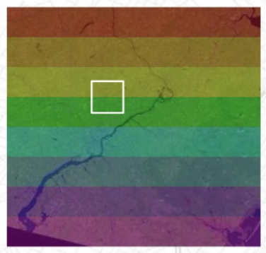
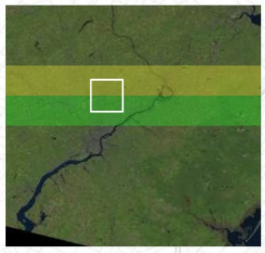
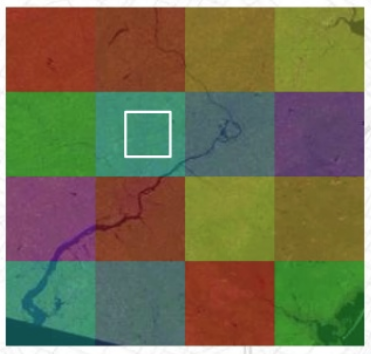
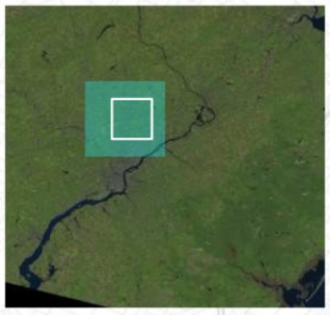
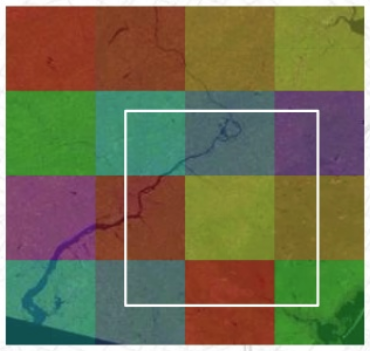
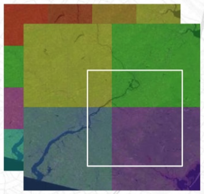

<!DOCTYPE html>
<html lang="en">
  <head>
    <meta charset="utf-8" />
    <meta name="viewport" content="width=device-width, initial-scale=1.0, maximum-scale=1.0, user-scalable=no" />

    <title>reveal-md</title>
    <link rel="stylesheet" href="./css/reveal.css" />
    <link rel="stylesheet" href="./css/theme/solarized.css" id="theme" />
    <link rel="stylesheet" href="./css/highlight/zenburn.css" />
    <link rel="stylesheet" href="./css/print/paper.css" type="text/css" media="print" />
    <link rel="stylesheet" href="./_assets/style.css" />

  </head>
  <body>
    <div class="reveal">
      <div class="slides"><section ><section data-markdown><script type="text/template"><div>How Open Communities are Revolutionizing Science</div>
<hr />
<div style="font-size: 75%">
Improving Scalability and Reproducibility in the Geo-Sciences with Open Standards, Open Data, and Open Source Software
</div>
<hr />
<div>
    <div style="text-align: right; font-size: 80%">
        Matthew Hanson<br />
        @GeoSkeptic<br />
        <br />
    </div>
    <br />
    <div style="font-size: 50%">@element84</div>
</div>

<aside class="notes"><ul>
<li>Hello, name, company</li>
<li>Title of talk</li>
</ul>
</aside></script></section><section data-markdown><script type="text/template">


<aside class="notes"><ul>
<li>Used to work with governments and academia, because that&#39;s who used sat data</li>
<li>Career has largely been about helping make science easier, for scientists</li>
<li>analytics and algorithm dev<ul>
<li>always spent more time doing data preparation</li>
<li>interesting analytics work always seemed harder than it needed it be</li>
</ul>
</li>
<li>computing application to science</li>
<li>saw that most time scientists spent doing non-science</li>
<li>looked to streamline the process</li>
</ul>
</aside></script></section><section data-markdown><script type="text/template">
<br />

<aside class="notes"><ul>
<li>CMR, Earthdata Search, NASA EOSDIS, Cumulus - moving DAAC into the cloud</li>
<li>Now, an anecdote...</li>
</ul>
</aside></script></section></section><section ><section data-markdown><script type="text/template">
Scientists are messy


<aside class="notes"><ul>
<li>scientists were poor at data management</li>
<li>typical work directory, with hapharzardly named files</li>
<li>don&#39;t know what was source, final product</li>
<li>no one but the scientist really knew what was going on<ul>
<li>made replication difficult</li>
</ul>
</li>
<li>Not their fault - no standards or mechanisms in place to do processing, reporting</li>
<li>Lots of problems here<ul>
<li>concern about scenes (how they are distributed)</li>
<li>concern of bands</li>
<li>processing and documentation</li>
<li>what should be archived?  What should be documented?  How does someone reproduce this?</li>
</ul>
</li>
</ul>
</aside></script></section><section data-markdown><script type="text/template">
Data provenance is a luxury

<hr />

Publishing papers is the goal

<aside class="notes"><ul>
<li>provenance seen as a luxury, no time for</li>
<li>it&#39;s a luxury because it&#39;s difficult, dearth of tools, standards to facilitate that</li>
</ul>
</aside></script></section><section data-markdown><script type="text/template">
Efforts underway to solve these problems

<aside class="notes"><ul>
<li>first, let&#39;s take go back 5 years when there was a sea change</li>
</ul>
</aside></script></section></section><section ><section data-markdown><script type="text/template">


the rise of remote sensing data

<aside class="notes"><ul>
<li>just been 3 years since last one, quite a different time<ul>
<li>previous FOSS4G had been web-mapping</li>
</ul>
</li>
<li>Planet launches Doves (2013) - which showed a possible future of having daily fairly high res</li>
<li>starting to see much lower-cost drones</li>
<li>Perhaps most importantly, Landsat-8 launched (2013) - why is this such a big deal</li>
</ul>
</aside></script></section><section data-markdown><script type="text/template">


<aside class="notes"><ul>
<li>1993 landsat6 ruptured fuel chamber, caused tumbling, failed to achieve orbit</li>
<li>landsat5 extended life span (2012), but some regions not covered<ul>
<li>archiving responsibility of local ground stations</li>
</ul>
</li>
<li>disasters were not over<ul>
<li>L7 launched 1999, and was great</li>
</ul>
</li>
</ul>
</aside></script></section><section data-markdown><script type="text/template">


<aside class="notes"><ul>
<li>after a little over 3 years, 2003, SLC failed<ul>
<li>piece of hardware compensates for forward movement of craft</li>
</ul>
</li>
<li>More pronounced at edges of scene, complete at center</li>
<li>made very difficult to use</li>
<li>that&#39;s why L8 was such a big deal, combine with NASA&#39;s Open Data policy</li>
</ul>
</aside></script></section><section data-markdown><script type="text/template">


<aside class="notes"><ul>
<li>so now we had data<ul>
<li>Landsat-8 (2013)</li>
<li>shortly after we had Sentinel-2A (2015)</li>
</ul>
</li>
<li>Open data policies (USGS, NASA, ESA)</li>
<li>use of that data exploded</li>
<li>guess what, no longer governments and academia using the data</li>
<li>Now we had a huge number of Data scientists</li>
<li>how to derive info, through ML pipelines - analytics<ul>
<li>not do traditional science (determine what&#39;s true from what isn&#39;t)</li>
<li>use this data to solve problems<ul>
<li>agriculture</li>
<li>climate change</li>
<li>international development</li>
<li>disaster response</li>
<li>to help inform policy</li>
</ul>
</li>
</ul>
</li>
</ul>
</aside></script></section></section><section ><section data-markdown><script type="text/template">
Consuming Big Data

<aside class="notes"><ul>
<li>observations on big data</li>
<li>NISAR 80TB/day</li>
<li>cannot do this locally</li>
</ul>
</aside></script></section><section data-markdown><script type="text/template">


<aside class="notes"><ul>
<li>FOSS4G community set to work on improving consumption</li>
<li>web mapping services for viewing, not for science<ul>
<li>needed the original unscaled image</li>
<li>so cloud native formats were very relevant for science</li>
<li>you could access the original data alues for any region, without downloading</li>
</ul>
</li>
</ul>
</aside></script></section><section data-markdown><script type="text/template">
TIFF Striped Segments


</script></section><section data-markdown><script type="text/template">
TIFF Striped Segments = Bad


</script></section><section data-markdown><script type="text/template">
TIFF Tiled Segments


</script></section><section data-markdown><script type="text/template">
TIFF Tiled Segments = Good


</script></section><section data-markdown><script type="text/template">
TIFF Tiled Segments = Good


</script></section><section data-markdown><script type="text/template">
Overviews


</script></section><section data-markdown><script type="text/template">
Cloud Native Geospatial Data Formats

- Cloud Optimized GeoTiff (COG)
- JPEG2000
  - excellent compression
  - intensive encoding/decoding
- TileDB
  - New on the scene
  - Performant
- Zarr
  - Useful for global gridded data (e.g., climate data)
  - No GDAL driver

<aside class="notes"><ul>
<li>Different formats</li>
</ul>
</aside></script></section><section data-markdown><script type="text/template">
Open Data sets

AWS: https://registry.opendata.aws/

Google: https://tinyurl.com/y4tn5pon

Microsoft Azure: https://tinyurl.com/y2ae882p

<aside class="notes"><ul>
<li>cloud providers started making datasets available on their storage</li>
<li>incentivize processing on their systems</li>
<li>it&#39;s working, as new public datasets are added<ul>
<li>icesat2 ?</li>
<li>LENS, CMIP6 ?</li>
</ul>
</li>
</ul>
</aside></script></section></section><section ><section data-markdown><script type="text/template">
Discovering Big Data

<aside class="notes"><ul>
<li>Too much data, how do we know what to run it on</li>
<li>How do we do it programmatically?<ul>
<li>for ML and analytics pipelines</li>
</ul>
</li>
</ul>
</aside></script></section><section data-markdown><script type="text/template">
### If your metadata cannot be crawled and indexed, your data does not exist

<aside class="notes"><ul>
<li>At least it cannot be found and used, so might as well not exist</li>
</ul>
</aside></script></section><section data-markdown><script type="text/template">


SpatioTemporal Asset Catalogs

https://stacspec.org/

<aside class="notes"><ul>
<li>talk on STAC: <a href="https://docs.google.com/presentation/d/13wuBZWbjxD9aite2O-Bf2m9CNTakh_OVAueIlyM1Buw/edit?usp=sharing">https://docs.google.com/presentation/d/13wuBZWbjxD9aite2O-Bf2m9CNTakh_OVAueIlyM1Buw/edit?usp=sharing</a></li>
</ul>
</aside></script></section><section data-markdown><script type="text/template">


<aside class="notes"><ul>
<li>as an example, pop in an ID and find a scene</li>
<li>because the catalog of data was crawlable</li>
</ul>
</aside></script></section></section><section ><section data-markdown><script type="text/template">
Great progress in Open Standards

- discoverability
- consumption and use

<aside class="notes"><ul>
<li>On our way to solving some challenges</li>
</ul>
</aside></script></section><section data-markdown><script type="text/template">
Still we have problems 
<hr />
There is a poor understanding of remote sensing data which limits the value of insights derived from it

<aside class="notes"><ul>
<li>Data Science</li>
<li>good at using ML approaches and analytics</li>
<li>Deep Learning has proven to be successful in many areas</li>
<li>So, the tech community saw influx of open data, started using it<ul>
<li>have done great things at improving showing what can be done with computing</li>
</ul>
</li>
<li>remote sensing is difficult and complicated<ul>
<li>lots of sources of variation, over time, over scenes, atmosphere is hard</li>
</ul>
</li>
<li>poor understanding of accuracy and uncertainty<ul>
<li>Not just tech community, these are also hard science problems</li>
<li>relaying that info from scientists to non-scientists is even harder</li>
</ul>
</li>
</ul>
</aside></script></section><section data-markdown><script type="text/template">


<aside class="notes"><ul>
<li>As example, there&#39;s a handbook<ul>
<li>details of L8, how to use the data</li>
</ul>
</li>
<li>Most users in tech community likely never cracked it open</li>
</ul>
</aside></script></section><section data-markdown><script type="text/template">


<aside class="notes"><ul>
<li>If they had, they would see that the distributed data is not even Top of Atmosphere</li>
<li>It is TOA prime<ul>
<li>solar elevation</li>
<li>makes scenes not comparable from day to day or region to region</li>
</ul>
</li>
<li>End users fetch data and calculate NDVI<ul>
<li>arguable to use it as TOA</li>
</ul>
</li>
<li>Not to say no one knows this, companies doing large-scale analysis <ul>
<li>but maybe not everyone</li>
</ul>
</li>
</ul>
</aside></script></section><section data-markdown><script type="text/template">
#### Users assume that data is analysis ready

<aside class="notes"><ul>
<li>L8/S2 still not available in cloud native formats as surface refl</li>
<li>especially when it went up on AWS<ul>
<li>it was available to the masses</li>
</ul>
</li>
</ul>
</aside></script></section><section data-markdown><script type="text/template">
### Analysis Ready Data Community


<aside class="notes"><ul>
<li>the answer is still standards</li>
<li>users should not have to process each type of data in different ways</li>
<li>how can we mix and fuse data from different sensors or sensor modalities</li>
<li>need to rely on scientific community to determine what is possible and what isn&#39;t</li>
<li>requires more engagement between scientists and software developers</li>
<li>This ARD initiative is perhaps a way forward to think about<ul>
<li>what ARD even is</li>
<li>how can we communicate corrections, geometric and radiometric uncertainties</li>
<li>so non-experts (in remote sensing) are using it in a way that is scientifically consistent</li>
</ul>
</li>
<li>However, scientists also have problems</li>
</ul>
</aside></script></section></section><section ><section data-markdown><script type="text/template">
## Scientific Problems

- Scalability
- Reproducibility
- Academic IP

- Software quality
  - "spaghetti" code
  - data provenance

- "Open Source" vs publicly available software

<aside class="notes"><ul>
<li>But, scientific community had problems of their own</li>
<li>yes, there has been adoption of OS, but not large-scale</li>
<li>Many scientists still doing things the old way<ul>
<li>Scientists spaghetti code</li>
<li>poor data management</li>
<li>unreleased data or software</li>
</ul>
</li>
<li>this has led to a reproducibility problem<ul>
<li>50% of earth science work cannot be reproduced</li>
</ul>
</li>
<li>The reason why is that<ul>
<li>scientists do not necessarily know about the cloud and efficent computing</li>
<li>and of course, change is hard, and this is cultural</li>
</ul>
</li>
<li>The difference between usable OSS and code that&#39;s thrown up there</li>
<li>deployment, examples, documentation, software maintenance</li>
<li>Various groups have built platforms<ul>
<li>They are useful, but not widely adopted</li>
</ul>
</li>
</ul>
</aside></script></section><section data-markdown><script type="text/template">
Stop building platforms in search of a user community
<hr />
Build a user community that will help build a platform

<aside class="notes"><ul>
<li>the platform that will help solve their problems</li>
<li>that&#39;s why I&#39;m exicted about one such effort called</li>
</ul>
</aside></script></section></section><section ><section data-markdown><script type="text/template">
## Pangeo

http://pangeo.io

Pangeo is first and foremost a community promoting open, reproducible, and scalable science

<aside class="notes"><ul>
<li>This is but one, I&#39;m sure there are others with similar goals</li>
<li>Let&#39;s talk and collaborate</li>
<li>Platforms come and go, communities have inertia</li>
</ul>
</aside></script></section><section data-markdown><script type="text/template">
The Pangeo project serves as a coordination point between scientists, software, and computing infrastructure
</script></section><section data-markdown><script type="text/template">
### Pangeo Goals

1. Foster collaboration around the open source scientific python ecosystem for ocean / atmosphere / land / climate science.
2. Support the development with domain-specific geoscience packages.
3. Improve scalability of these tools to handle petabyte-scale datasets on HPC and cloud platforms.
</script></section><section data-markdown><script type="text/template">


courtesy of [Rich Signell](https://www.youtube.com/watch?v=2TkZa0s58qs)

<aside class="notes"><ul>
<li>Jupyter in the cloud</li>
<li>the data is stored in the cloud in cloud friendly formats</li>
<li>algorithm is open</li>
<li>Executable paper</li>
<li>This was possible because of</li>
</ul>
</aside></script></section><section data-markdown><script type="text/template">
Open Source Software

Open Standards

Open Data

Open Science
</script></section></section><section  data-markdown><script type="text/template">
@GeoSkeptic

<hr />

@Element84</script></section></div>
    </div>

    <script src="./lib/js/head.min.js"></script>
    <script src="./js/reveal.js"></script>

    <script>
      function extend() {
        var target = {};
        for (var i = 0; i < arguments.length; i++) {
          var source = arguments[i];
          for (var key in source) {
            if (source.hasOwnProperty(key)) {
              target[key] = source[key];
            }
          }
        }
        return target;
      }

      // Optional libraries used to extend on reveal.js
      var deps = [
        { src: './lib/js/classList.js', condition: function() { return !document.body.classList; } },
        { src: './plugin/markdown/marked.js', condition: function() { return !!document.querySelector('[data-markdown]'); } },
        { src: './plugin/markdown/markdown.js', condition: function() { return !!document.querySelector('[data-markdown]'); } },
        { src: './plugin/highlight/highlight.js', async: true, callback: function() { hljs.initHighlightingOnLoad(); } },
        { src: './plugin/zoom-js/zoom.js', async: true },
        { src: './plugin/notes/notes.js', async: true },
        { src: './plugin/math/math.js', async: true }
      ];

      // default options to init reveal.js
      var defaultOptions = {
        controls: true,
        progress: true,
        history: true,
        center: true,
        transition: 'default', // none/fade/slide/convex/concave/zoom
        dependencies: deps
      };

      // options from URL query string
      var queryOptions = Reveal.getQueryHash() || {};

      var options = extend(defaultOptions, {}, queryOptions);
    </script>


    <script>
      Reveal.initialize(options);
    </script>
  </body>
</html>
